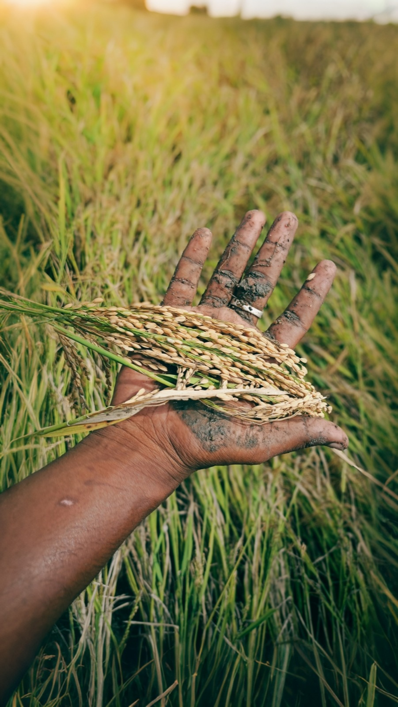

About the Developer
👤 Name: Jeerath Kumar
📍 Location: Ponnanthangal Village, Thiruvannamalai District
🎓 Education: BCA (Bachelor of Computer Applications) - Year 3, Guru Nanak College
🌾 Background: Member of a Farming Family
📖 My Story
I belong to a farmer family, and I have personally witnessed the challenges and difficulties faced by farmers in our village. From financial struggles to lack of awareness about government schemes and modern technologies, farmers face many problems in managing their crops and income effectively.
Being both a student of computer applications and a member of a farming family, I felt a strong responsibility to use my technical knowledge to create a solution that can help farmers. This project is developed with the aim of supporting farmers by providing useful information, tracking expenses, improving crop management, and creating awareness about government schemes.
🎯 Mission
Through this project, I hope to make a small but meaningful contribution to the farming community and help improve the lives of farmers using technology. Vivasayin Kanakku is my effort to bridge the gap between modern technology and traditional farming, making farm management simple, efficient, and accessible to every farmer.
🎯 Project Overview
Vivasayin Kanakku (meaning "Farmer's Account" in Tamil) is a comprehensive web-based farm management system designed to help farmers track finances, manage tractor rentals, and stay informed about government schemes—all in one place.
Why This Project?
Indian farmers often struggle with:
- 📊 Scattered financial records (cash books, notebooks)
- 🚜 Complex rental tracking for equipment
- 🏛️ Difficulty finding eligible government schemes
- 💰 Inability to analyze profitability by crop
- 📱 Limited digital literacy with complex software
Vivasayin Kanakku solves all these with a clean, farmer-friendly interface.
✨ Core Features
Dashboard
Real-time overview of income, expenses, profit/loss, and rental revenue
Finance Tracker
Log expenses and income by crop with detailed categorization
Tractor Rental
Manage tractor fleet with hourly/daily rates and image upload
Rental Ledger
Track all rentals, payments, and auto-calculate work duration
Govt. Schemes
Browse available government subsidies and schemes with eligibility
Analytics
Crop-wise profit analysis and seasonal trends
⚙️ System Specifications
Hardware Requirements
- ✓ Any modern laptop, desktop, or tablet
- ✓ Minimum 2GB RAM
- ✓ Internet connection (for sync)
- ✓ Works offline with local caching
Browser Support
- ✓ Chrome 90+
- ✓ Firefox 88+
- ✓ Safari 14+
- ✓ Edge 90+
- ✓ Mobile browsers (iOS Safari, Chrome Android)
Server Specifications
- ✓ Python 3.8+
- ✓ Flask web framework
- ✓ JSON-based local storage
- ✓ CORS enabled for cross-domain requests
💻 Technology Stack
Frontend
- 📄 HTML5
- 🎨 CSS3 (Custom + Grid/Flexbox)
- ⚡ Vanilla JavaScript ES6+
- 🔤 Google Fonts (Mukta, Tiro Devanagari)
Backend
- 🐍 Python 3.8+
- 🌐 Flask 2.0+
- 📦 Flask-CORS
- 💾 JSON file storage
📦 Application Modules
1️⃣ Dashboard Module
Central hub displaying financial KPIs, crop profitability, and quick actions. Updates in real-time as data changes.
2️⃣ Expense & Income Tracker
Record daily farm activities with categorized expenses (seeds, fertilizer, labor) and income (crop sales by buyer). Automatic profit calculation.
3️⃣ Tractor Management
Add tractors with specifications (HP, year, rates). Upload tractor images. Mark as Available or Rented. Manage hourly and daily rental rates.
4️⃣ Rental System
Two-Stage Workflow:
- Stage 1: Farmer books rental with start time and advance payment
- Stage 2: When work completes, owner sets end time and system auto-calculates final amount
- Dynamic Pricing: ₹800/day or ₹100/hour, whichever applies
5️⃣ Rental Ledger
Master record of all rentals with payment tracking, due amounts, and completion status. Shows active vs. completed rentals.
6️⃣ Government Schemes
Curated list of schemes from central and state governments with eligibility criteria, required documents, and application links.
🔄 Key Workflows
📋 Rental Workflow (Two-Stage)
Stage 1: Initial Booking
1. Farmer visits Tractor page → Clicks "Rent Out"
2. Enters: Renter name, phone, village, purpose, START TIME
3. Records advance payment (e.g., ₹500)
4. Clicks "Confirm Booking" → Rental created with end_date=null
Stage 2: Work Completion
1. Later, opens Rental Ledger page
2. Sees rental with 🟢 "Active" badge
3. Clicks "Mark Complete" button
4. Sets END TIME when work finishes
5. System calculates: (2hr 30min = ₹250 @ ₹100/hr)
6. Shows: Total ₹250, Already Paid ₹500, No Due
7. Clicks "Mark Complete & Settle" → Rental completed
✅ Result
Rental marked complete with final amount calculated. Tractor marked Available. Payment ledger updated.
💰 Expense/Income Workflow
Recording a Transaction
1. Go to Expense & Income page
2. Click "➕ Add Expense" or "💰 Add Income"
3. Fill: Date, Crop, Category, Amount, Notes
4. Submit → Dashboard updates automatically
5. View trend in "Crop-wise Profit"
❓ Frequently Asked Questions
Q: Is my data backed up?
A: Data is stored in JSON files in the `backend/data/` folder. Regularly backup this folder to external storage or cloud.
Q: Can I use this offline?
A: The system works best online. Offline functionality is planned for future versions.
Q: How do I add my own schemes?
A: Admin can edit `backend/data/schemes.json` directly or future versions will have an admin panel.
Q: Can multiple users use simultaneously?
A: Current version supports single-user. Multi-user support with farmer IDs is in roadmap.
Q: How are rental rates calculated?
A: Default: ₹800/day or ₹100/hour. Set custom rates per tractor in Tractor Management.
Q: What if payment extends beyond one day?
A: System combines: Full days @ ₹800 + remaining hours @ ₹100/hr. E.g., 2.5 days = (2 × ₹800) + (12 × ₹100) = ₹2,000
Q: How do I export my data?
A: Data is already in JSON format. Copy files from `backend/data/` or use browser's export features.
Vivasayin Kanakku v1.0 • Developed by Jeerath Kumar • 2026
💚 Made with passion for Indian farmers • A BCA Project for Social Impact